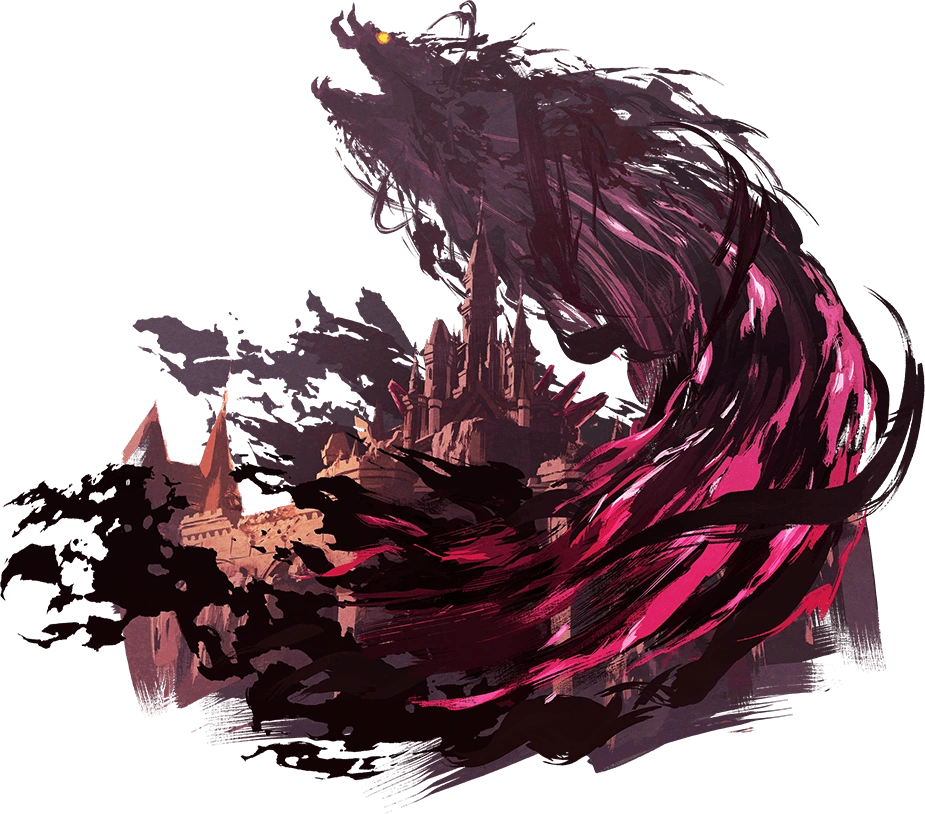
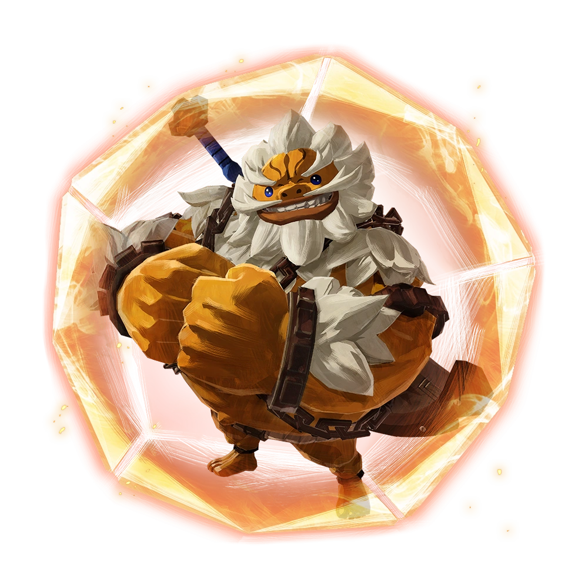
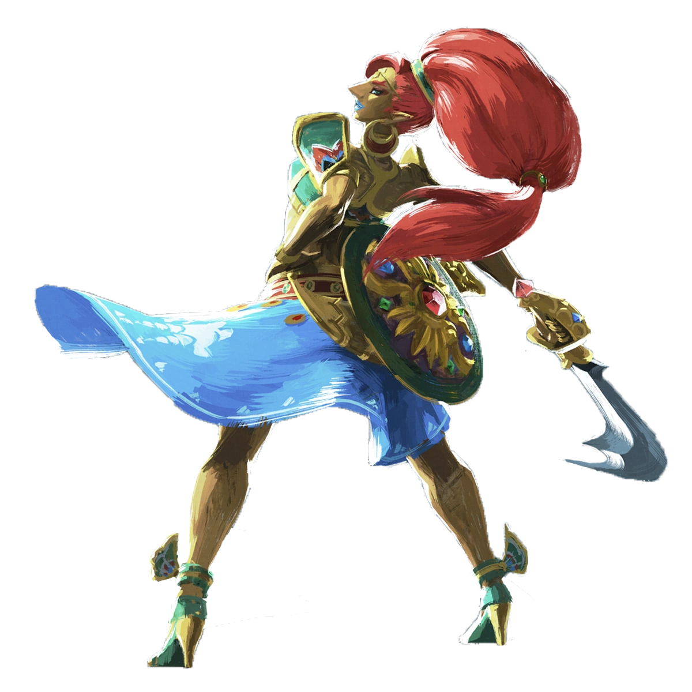
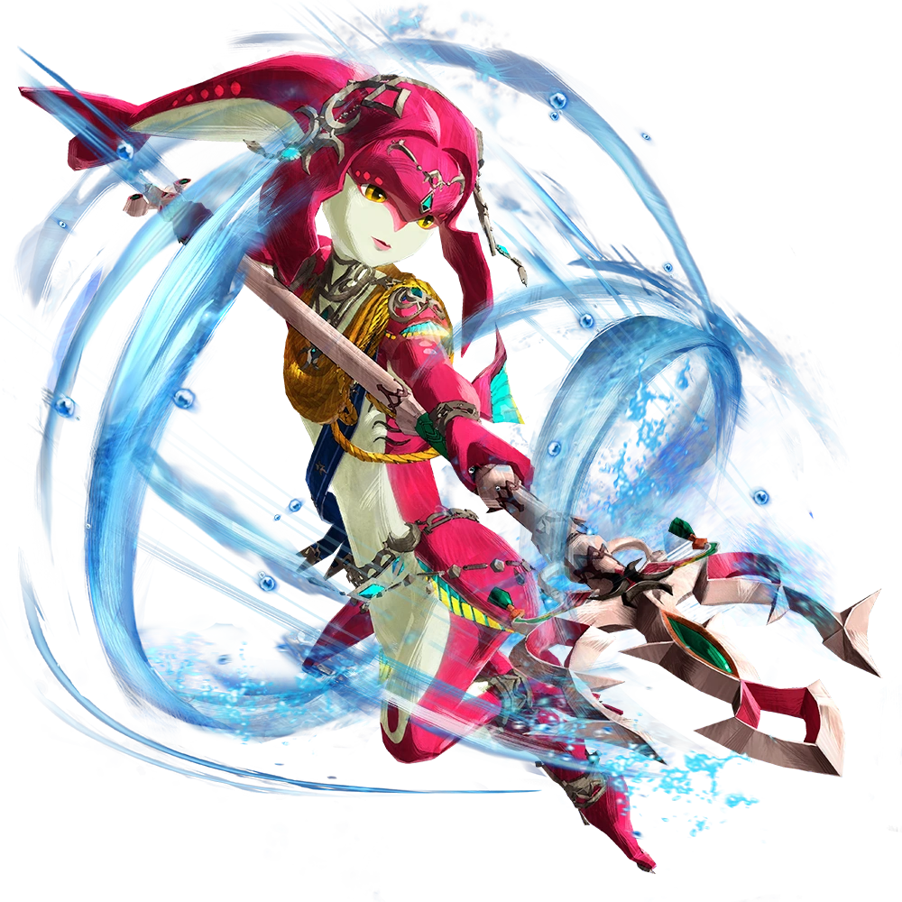
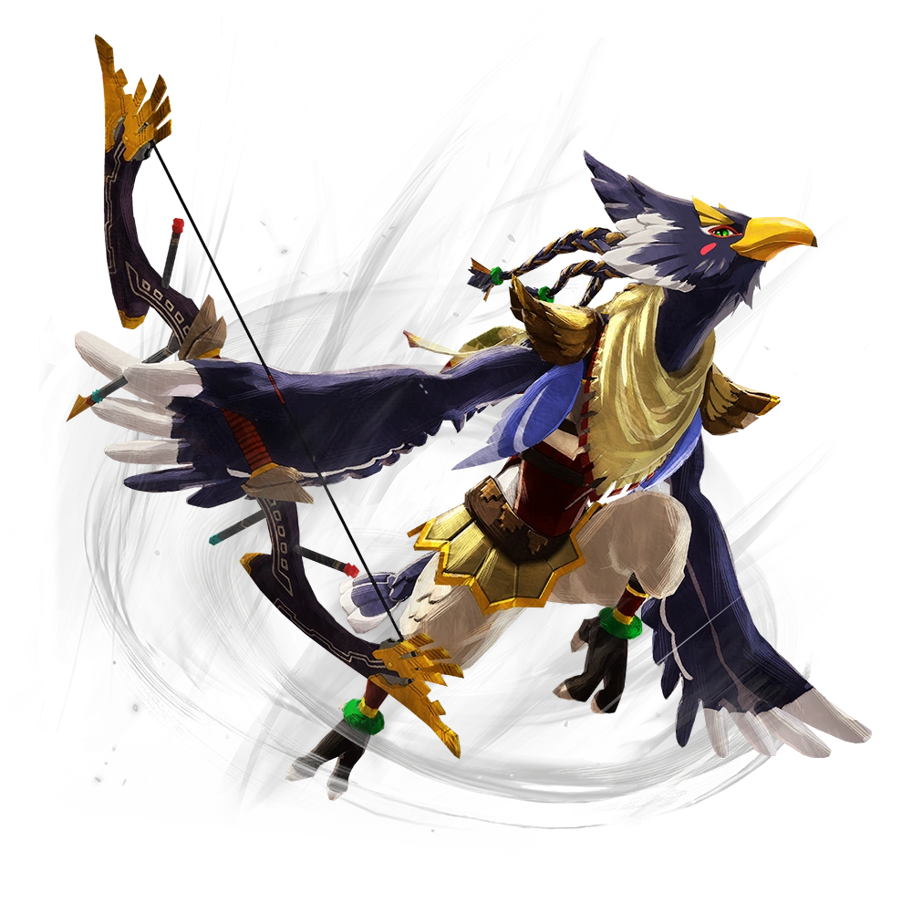
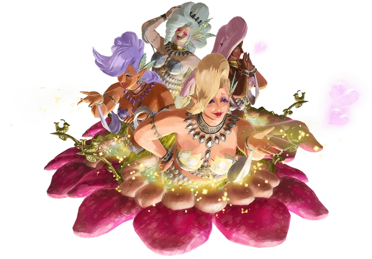

A lo largo de las diferentes historias, nos encontraremos con diferentes individuos



Ganon
La manifestación de la maldad pura

Goron
Una raza poderosa pero en su mayoría pacífica de habitantes de las montañas.

Gerudo
Una tribu solitaria compuesta casi exclusivamente por mujeres. En gran medida, se mantienen en la
región desértica y han permanecido pacíficos con la gente de Hyrule.

Zora
Una raza acuática, Zoras han sido amigos y enemigos de la Familia Real de Hyrule.

Rito
Una orgullosa raza de personas parecidas a pájaros que evolucionaron a partir de los Zora,los Rito
se elevan por el cielo con sus enormes alas.

Las Grandes Hadas
Grandes hadas humanoides conocidas por sus poderes curativos, ayudan a los aventureros
necesitados y pueden regalarles poderes mágicos.